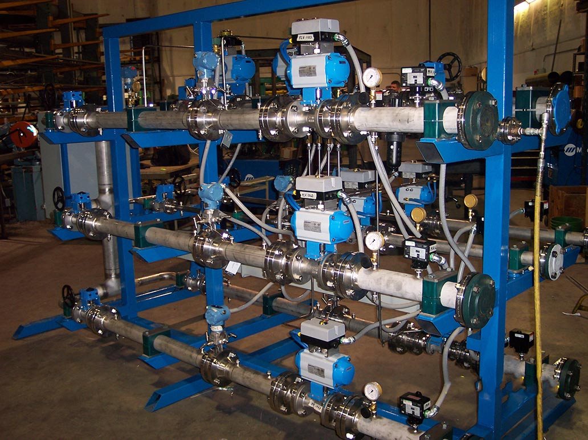
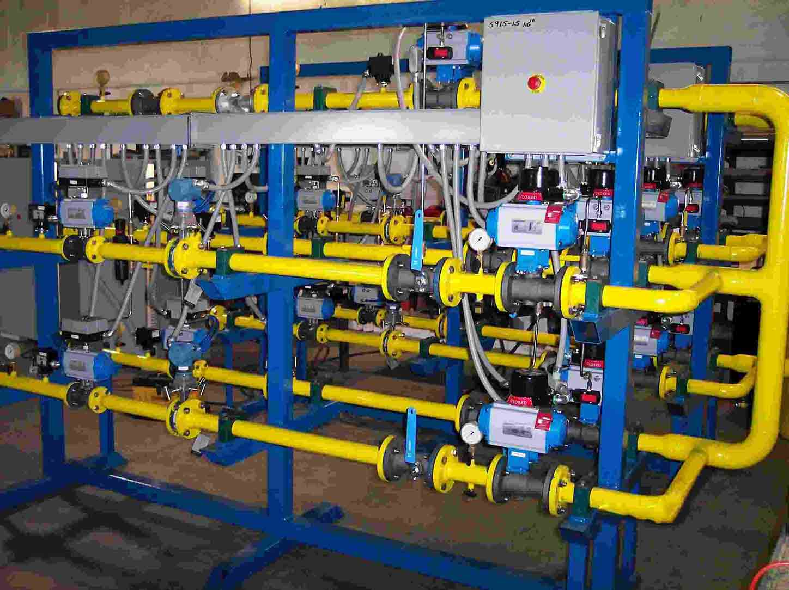

ACI has more than 30 years of experience in transporting and controlling gas and in particular gaseous oxygen in the safest conditions. This experience resulted in internal “Engineering Practices” that give rules and regulations for the gas oxygen piping, and in particular the design of oxygen valve trains. These requirements are constantly updated and upgraded, to always present the best solution for safety and efficiency.
Valve trains are designed according to standards of the country in which they will be installed. Typical standards for the United States is NFPA 86 (National Fire Protection Association, 2015 edition) and CGA-4.4-2003 (Compressed Gas Association). For the European Union valve trains will be CE compliant and follow the EN746-2 guidelines. In addition, where required, Explosion Proof or ATEX valve trains will be produced. Please consult an ACI representative for questions regarding any special requirements your particular application may require.
